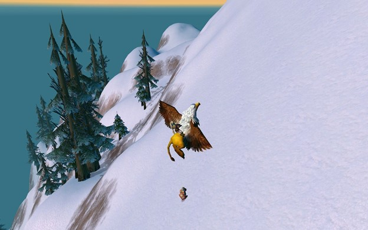

Zone: Dun Morogh
As a true Dwarf, Mhousi’s favourite zone is Dun Morogh. She loves the all year long cold and
snow in the area and likes to get lost in the mountains and forest of her homeland.
Although, she is always out and about discovering new lands and waters, when she is in
Ironforge, she always stops by and visits her favourite tutor, Tinkmaster Overspark.
Pets and hobbies

Mhousi has explored working with three pets so far. She had the strongest bond with Husilaci
being her first pet, a grey Crag Boar from Dun Morogh. They were together up until level 15 and
grew very close, also with Mhousos.
However, the time came for a change. While a boar has its advantages it is not the best tank as
it does not have a high enough DPS (damage per second).
Once in Kalimdor, the choice was obvious for a Moonstalker. Cicánka was a great companion,
she had many great skills to pass over to future pets, like cower, growl and claw. However,
Mhousi always knew she was not really a cat person. They spent some time together but did not
make history.
Today, Mhousi works together with Palikutya a Ghostpaw Runner from Ashenvale. Palikutya is
a great pal, he quickly learned all the skills Cicánka possessed, and keeps learning and
developing at lightspeed.
Palikutya is particularly strong in attack and acquired all major armor skills (frost, arcane,
fire, …). One of his greatest virtue is, however, loyalty. He follows Mhousi down into thedeapest and scariest dungeons. What is more, he often even leads the way and helps
Mhousi out in mapping unknown areas.
Here is to many more of their adventures!